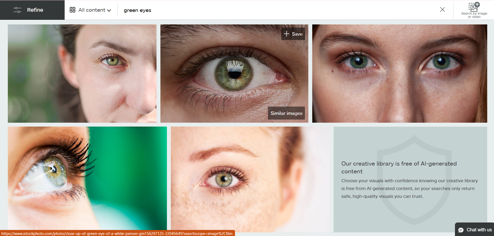
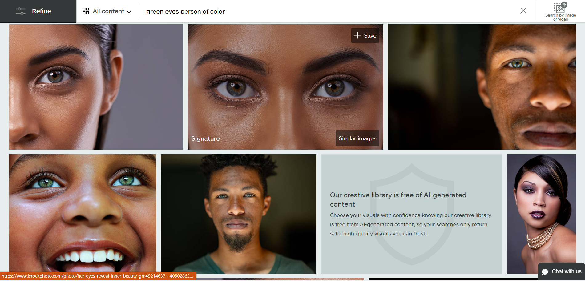
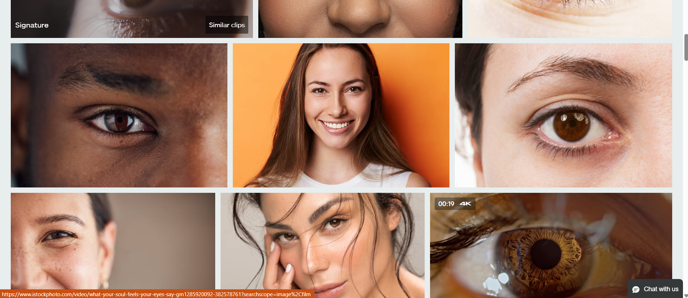

For our teachable machine, we agreed that eye color would be an interesting subject. Especially because it could be easily tested if you had enough brightness for a user’s camera to view the user’s eye color, and see how camera quality picks up different colors. It wouldn’t require anything except a zoom function or willingness to get closer to a camera. This machine identifies three of the most common eye colors: Brown, Blue, Green. Using life images or images available from websites for educational purposes, we added a variety of different images to help with combatting potential biases, as well trying to focus solely on the iris and the white part of the eye. As we were still testing the machines with stock images uploaded into the model, it would struggle to determine eye color. So we continued adding images in order to add more accuracy to our model and be able to differentiate when there are different lighting conditions or eye colors that are similar to others. For example, we looked up stock images of brown eyes to continue honing the machine’s ability to decipher eye color without being distracted by additional characteristics of the photo including eye makeup, pose, and lighting. If the machine incorrectly identified the color, the stock photo was added to the brown eye category in order to hopefully correct the mistake. This process was repeated for each eye color, and photos taken by the three of us were also added to each category.
View our machine here!There are many lessons to be learned from Unmasking AI, and many of those fit into what we are doing to complete this project. Something that has been on our minds is the biases that could be part of the engine that hosts and creates the learning model we are adding data to for this project. Taking the time to limit biases in our data has been time-consuming, but very much worth it to allow for more users to take part in the model. It also ensures further proper identification of different eye colors, as all eye colors are unique and may follow closer to one color or another depending on the lighting (say those with green-blue eyes or green-brown eyes). As Buolamwini discovered a lack of representation in the coded gaze, we noticed a lack of representation when searching for images to train our machine. When looking for photos of green and blue eyes, the images included virtually only white men and women. While it is less common for people of color to have blue or green eyes, there are a large number of photos that come up when searching “green eyes person of color”. However, these images do not appear when searching simply “green eyes”.
 Even when searching for brown eyes, which are much more common among people of color, the photos primarily include white people. This is an example of white normativity, or the phenomenon of the white or European culture being considered the default in a society. As seen in our photo search, when race is not specified, images of white people appear. Photos of people of color are only found when they are specified in the search.
